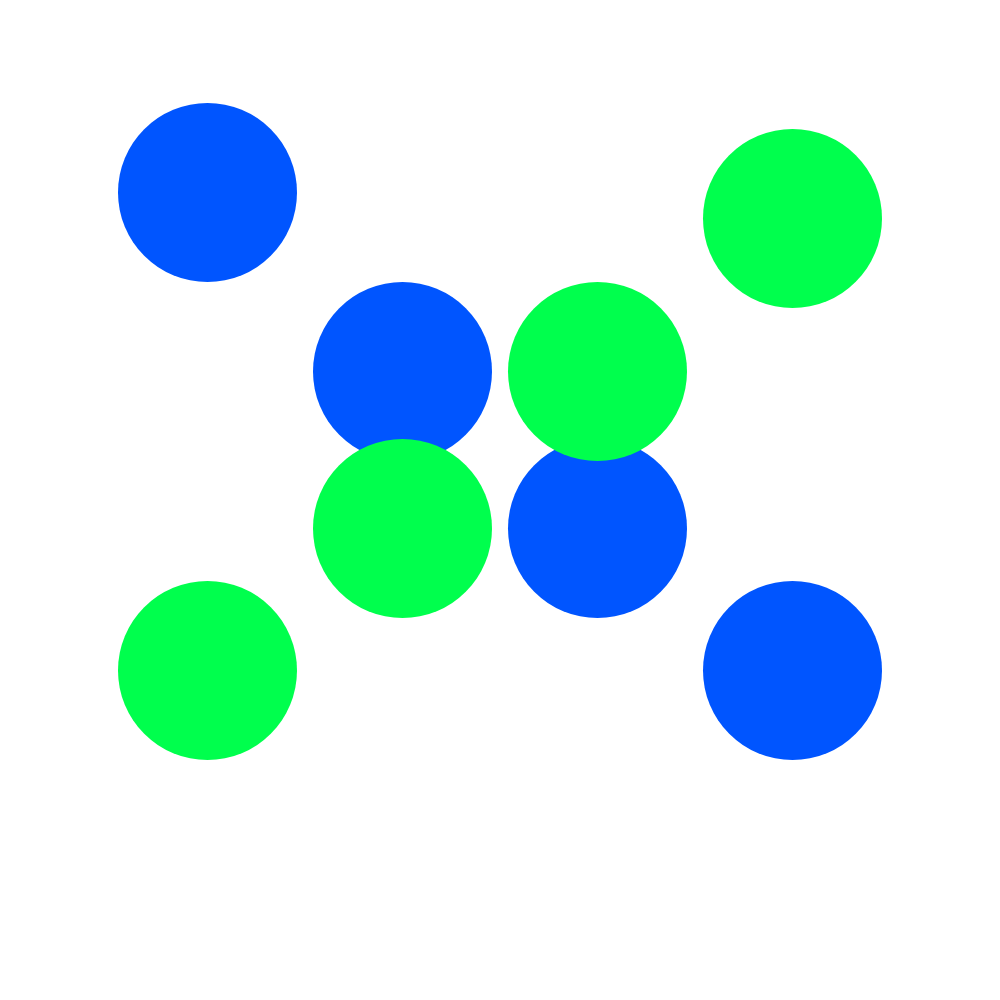
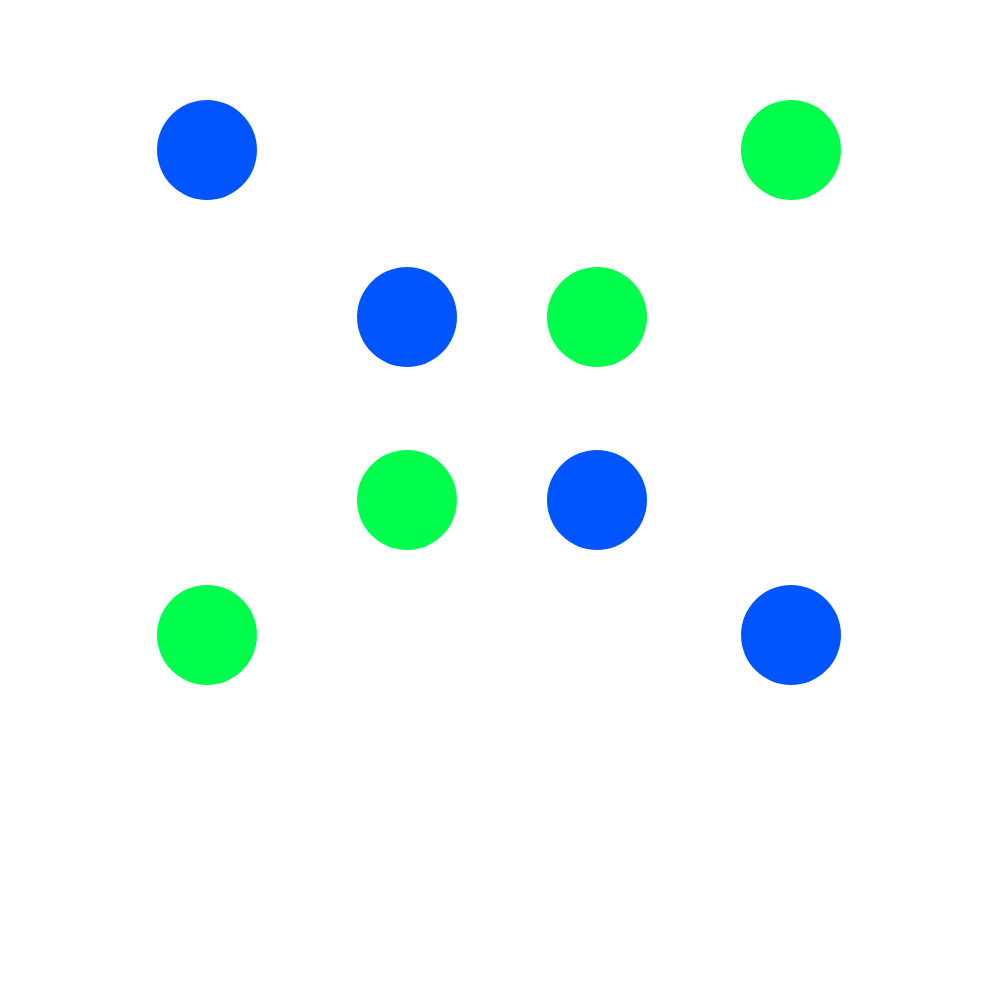

Open Adobe XD.
Create an artboard: 1,000 by 1,000 pixels.
Create a four column grid.
Draw a perfect circle filling the left column, 100 pixels from the top.
Remove border, and change fill color to #0055FF
select circle and press alt key to clone object.
Move cloned circle diagonally down and to the right, into the second column.
Clone the second circle and move the clone again, diagonally down and to the right into the third column.
Clone the third circle and move the clone again, diagonally down and the the right into the fourth column.
Clone the cirle in the right most column and move it to 100 pixels from the top of the right most column.
The circle should be parallel to the original circle on the left column.
Change the fill color of the upper right circle to #00FF4D.
Clone the new circle, but now move it diagonally down and to the left into the second column to the right.
Repeat action by cloning new circle and move it diagonally down and to the left into the next column.
Clone circle one more time and move it diagonally down and to the left into the left most column.
Export selected artboard as a png for design, and click on the export button.
email png file to eccles.timothy@gmail.com
My drawing:
Toddre's Drawing:
